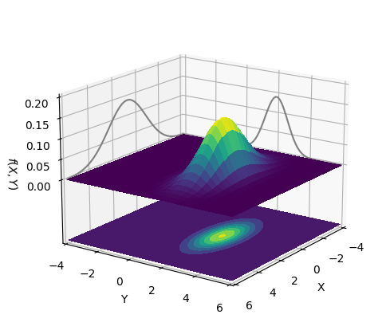
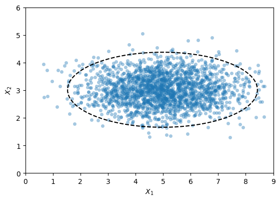

import matplotlib.pyplot as plt
from mpl_toolkits.mplot3d import Axes3D
import numpy as np
from scipy import statsThis jupyter notebook is part of the supplementary material for the book “Materials Data Science” (Stefan Sandfeld, Springer, 2024, DOI 10.1007/978-3-031-46565-9). For further details please refer to the accompanying webpage at https://mds-book.org.
10.8 Bivariate Normal Distribution
Plot the Distribution
The bivariate normal distribution is given by the location of the “peak” of the distribution and by a parameter that describe its spread along the two directions.
We assume that the major and minor axis of the elliptical isolines of the distribution are alligned with the x and y coordinate axis, and thus the covariance matrix has non-zero entries only on the main diagonal: \[\operatorname{Cov}=\begin{bmatrix}\sigma_x^2&0\\0&\sigma_y^2\end{bmatrix}\] where \(\sigma_x\) and \(\sigma_y\) are the standard deviations of the normal distribution along \(x\) and \(y\) direction, respectively.
# location of the center of the distribution
mean = np.array([1, 2], dtype=float)
# standard deviations along the two directions
sigma_x, sigma_y = 1.6, 0.7
# resulting covariance matrix
cov = np.array([[sigma_x ** 2, 0.],
[0., sigma_y ** 2]], dtype=float)
xlim = (-4, 6)
ylim = xlim
rv = stats.multivariate_normal(mean=mean, cov=cov)
x, y = np.linspace(*xlim, 80), np.linspace(*ylim, 80)
X, Y = np.meshgrid(x, y)
XY = np.dstack((X, Y))
Z = rv.pdf(XY)# Create a figure with axis `ax0` and then add a 3d axis `ax`,
# we used ax0 only temporarily so that we can position axis `ax` on it using `add_axes`.
# This is a hack for fixing the problem that in 3d plots sometimes the
# x/y/zlabels or ticks are outside the visible area.
fig, tmp_ax = plt.subplots(figsize=(6, 4))
ax = fig.add_axes([0.08, 0., 0.9, 1], projection='3d') # (left, bottom, width, height)
tmp_ax.set_axis_off() # make "invisible"
ax.plot_surface(X, Y, Z, rstride=3, cstride=3, linewidth=0, antialiased=False, cmap='viridis')
cset = ax.contourf(X, Y, Z, zdir='z', offset=-0.15, cmap=cmap)
# show the marginal density distributions
ax.plot3D(x, ylim[0] * np.ones_like(x), Z.max(axis=0), c='0.5')
ax.plot3D(xlim[0] * np.ones_like(y), y, Z.max(axis=1), c='0.5')
# Adjust the view angle and details of the ticks, axes labels etc
ax.view_init(17, 35)
ax.set(xlim=xlim, ylim=ylim, zlim=(-0.15,0.2),
zticks=np.linspace(0,0.2,5),
xlabel='X', ylabel='Y', zlabel='$f(X, Y)$');
Isolines of a bivariate normal distribution
(For details, please refer to chapter 10, section 8 of the MDS book)
The dataset is obtained by sampling a normal distribution, \(𝑋_1 , 𝑋_2 ∼ \mathcal{N}\), which is defined through the mean and the 2×2 covariance matrix.
from scipy.stats import multivariate_normal
true_mean = np.array([5, 3], dtype=float)
true_cov = np.array([[2., 0.], [0., 0.3]], dtype=float)
rv = multivariate_normal(mean=true_mean, cov=true_cov)
X = rv.rvs(size=2000)We then compute the sample mean, which is used to define the center of the ellipse, and the sample covariance matrix, which is used to obtain the standard deviations.
sample_mean = np.mean(X, axis=0)
sample_cov = np.cov(X, rowvar=False)
mu1, mu2 = sample_mean
sigma1, sigma2 = np.sqrt((sample_cov[0,0], sample_cov[1,1]))The next two cells implement the equations for the ellipse (see section 10.8 and the appendix of the MDS book):
def ellipse(x1, mu1, mu2, a, b):
y = np.sqrt((1 - ((x1 - mu1) ** 2) / (a ** 2)) * (b ** 2))
x1 = np.hstack((x1, x1[::-1], [x1[0]]))
return x1, mu2 + np.hstack((y, - y, y[0]))c = 0.01
fac = np.log(1 / (2 * np.pi * c * sigma1 * sigma2))
a = np.sqrt(2 * sigma1 ** 2 * fac)
b = np.sqrt(2 * sigma2 ** 2 * fac)
x1 = mu1 + 0.999 * np.linspace(-a, a, 200, )
x1, x2 = ellipse(x1, mu1, mu2, a, b)There, the np.hstack functions are used to create data of the upper and lower half of the ellipse in a format suitable for plotting.
fig, ax = plt.subplots()
ax.plot(X[:, 0], X[:, 1], 'o', mfc='C0', mec='none', alpha=0.4, ms=5)
ax.plot(x1, x2, 'k--')
ax.set_aspect('equal')
ax.set(xlim=(0, 9), ylim=(0, 6), xlabel='$X_1$', ylabel='$X_2$');
Note that the covariance matrix of the dataset X might have small, non-zero off-diagonal entries. This would imply that the ellipse, that fits best to the data would be slightly rotated. This is, for simplicity, ignored here.